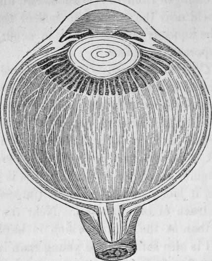

The Sense Of Sight. Part 4
Description
This section is from the book "Human Physiology For The Use Of Elementary Schools", by Charles Alfred Lee. Also available from Amazon: Human Physiology, for the Use of Elementary Schools.
The Sense Of Sight. Part 4
19. Besides this, the aqueous humour probably aids in adjusting the eye to different distances. As the lens lies immediately behind it, it is evident that, when the quantity of fluid is increased, it will press the lens back nearer the retina, while, at the same time, it renders the cornea more convex, and the reverse happens when the quantity is diminished. When the distension is very great, the pressure causes a cloudiness or opacity of the cornea, thereby producing blindness. This not unfrequently happens with horses that have been fed during the winter on dry food, either placed on a level with the head or above it. In the spring, when they are turned out to the green pasture, where their diet is changed from dry to succulent, and where also the head is held near the ground to collect the food, a congestion of the aqueous humour is apt to occur, sufficient to produce temporary blindness.
20. The Crystalline Lens
This is placed immediately behind the aqueous humour, a short distance back of the pupil, and is a double convex lens, perfectly transparent. In shape it closely resembles the common burning glass ; its posterior surface is, however, a little more convex than the exterior, and it approaches nearer to a sphere in infancy than in old age. When the crystalline lens is first removed from an eye, it looks like a mass of transparent crystal, without any trace of organization. Near the surface it is much softer than at the centre, which is harder and more compact. It is also softer in the young than in the old. As it consists chiefly of albumen, when exposed to heat, as of boiling water, alcohol or acids, it becomes white, like the white of an egg. If we examine it in this state, we shall find that it consists of an immense number of concentric plates or Lamella. More than two thousand of these have been counted, disposed in the form of layers like the coat of an onion, each layer consisting of an infinite number of very minute filaments, wound round in different directions, from various centres. The arrangement of these fibres differs in various animals, but is uniform in every individual of the same species. In fishes the lens is nearly spherical; in reptiles it is less so, and in birds and mammalia, it is still more flattened. In amphibious animals, as turtles or frogs, or those whose vision is adapted both for air and water, as seals and whales, the lens is more convex than in those which live entirely in the water. When this lens becomes so opaque as to obstruct the passage of the light, either partially or entirely, a person is said to have a cataract. This can only be cured by a surgical operation.
Fig. 6. magnified, showing the Crystalline Lens in its proper situation, between the aqueous and vitreous humours.
21. The Vitreous Humour
The vitreous body or humour is so called from its resemblance to melted glass. It is, like the other humours, perfectly transparent, and occupies the globe of the eye, of which it constitutes at least the posterior two thirds. It is surrounded by the retina in nearly its whole extent, to which, however, it does not adhere. It is composed of a fluid, contained in cells, formed of a membrane called the hyaloid, which communicate with each other, so that if it is punctured, the fluid with which it is filled will escape, though slowly in consequence of the intricacy of the cellular structure. On removing the vitreous humour from the eye, it appears to be of about the consistency of the white of an egg ; its use being to afford a surface for the extension of the expanded retina, to keep the lens at the requisite distance, and to transmit and refract the rays of light.
Fig. 7. The vitreous humour and crystalline lens magnified, with the stains of the pigrnentum nigrum left by the ciliary processes.
22. Laws Of Vision
Light passes through the air, or any medium of the same density, in straight lines; but when it passes from one medium into another, it is refracted, or bent out of a straight course, unless it strikes the new medium in a perpendicular direction, when it passes directly through. Air, water, glass, or any substance through which light passes, is called a medium. When a ray of light passes from a thinner or rarer medium, into one more dense, as from air into water, it is bent towards a line drawn perpendicularly to its surface. The contrary is the case when the reverse happens. This is shown by plunging a straight stick into the water, which will appear crooked. This may be illustrated by the familiar experiment of taking an object, such as a shilling, and fixing it at the bottom of an empty basin, then retiring backwards until the brim of the basin hides it ; then let water be poured into the vessel, and the coin will again come to light, as in the following cut. (See Fig. 8.)
Thus the ray of light from the coin will proceed in the direction a, previous to the addition of the water, but when water is poured into the vessel, the ray will be reflected down to the eye, and the shilling will appear to occupy the situation b. In the same way, when we look into a river, the pebbles appear to be raised in the water, and it looks shallower than it really is. From this circumstance, persons have often been drowned.
23. Lenses
A lens is usually made of glass, its surface being ground into some of the following shapes :
The first of these on the left hand would be called a plain lens ; the third, double convex ; the fourth, plano convex ; the fifth, double concave ; the sixth, plano concave; the seventh, concavo convex, etc. Now, light in its passage through these glasses, would be refracted in proportion to their greater or less degrees of convexity or concavity; but in passing through a plain lens, like the first, the rays would not be bent out of a straight course. For example, if you place an object at the bottom of a tub of water, and place the eye in a perpendicular direction over it, the object is seen precisely in its true situation; but if you withdraw a short distance, it will appear to be situated where it is not.
A, a solid oblong piece of glass ; a, a, a stream of light, which Strikes the surface of the glass, b, c, and which, being perpendicular, suffers it to pass through without refraction.
Continue to:
Tags
humans, anatomy, skeleton, bones, physiology, organs, nerves, brain